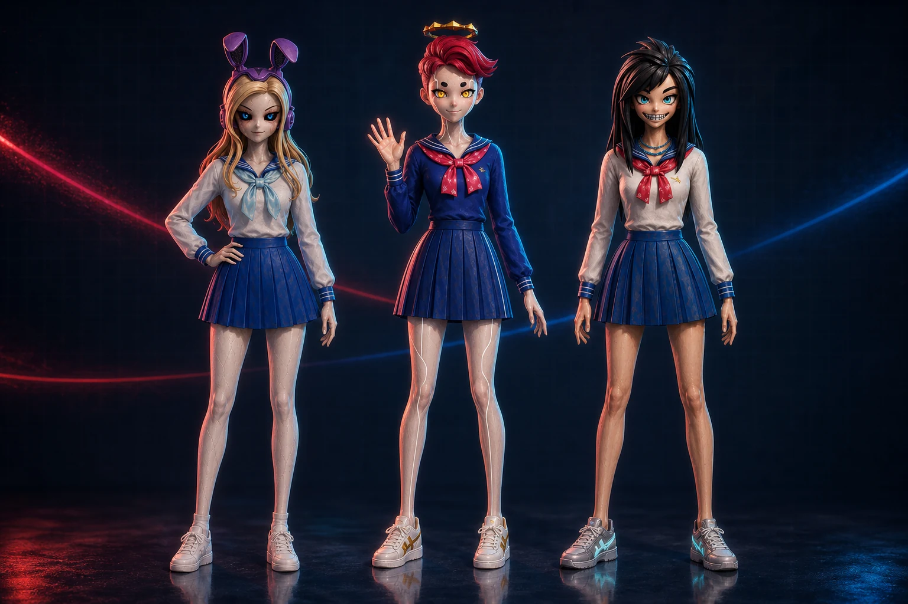

世界觀我們選擇成為
彼此的同類
在可以無限重抽外型的世界裡，每天穿上同一套水手服、留著同一張臉，是她們刻意做出的決定。

從制服女孩攝影、2021 年的 NFT 作品，到 2022 年 12 月在 CloneX Taiwan 聚會出道，UCX 把同一個創作題目帶進化身的世界。
這裡的五位角色來自史旺基持有的 CloneX。水手服、角色性格與故事是原創延伸，影像由 AI 生成。
閱讀出道紀錄三位站在台前，兩位推動幕後。
一間可以重抽外型的店，與選擇留下原貌的角色。先看 REROLL 的兩種版本。
在可以無限重抽外型的世界裡，每天穿上同一套水手服、留著同一張臉，是她們刻意做出的決定。
從一張頭像，到開始呼吸的角色。追蹤 UCX，繼續看她們與他的故事。
回看制服女孩攝影作品成員檔案與作品清單這次沒有載入成功。以下是團體的基本資訊：
本頁為個人非商業展示，非官方、未經 RTFKT／Nike 授權。角色圖為 AI 生成。